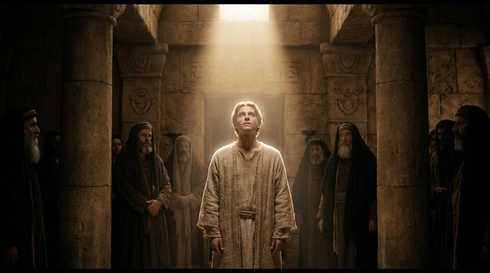

1 恩典中的張力：看見需要，重整焦點
初代教會在聖靈降臨後經歷了極大的復興，但魔鬼的攻擊往往不只在外部的逼迫，更在內部的張力。隨著人數增加，文化背景的差異引發了怨言。增長必然帶來管理上的挑戰，而抱怨往往是未被滿足的需要所發出的訊號。
面對這個危機，十二使徒做出了一個極為重要的決定。他們清晰認知自己的呼召：「但我們要專心以祈禱、傳道為事。」這不是傲慢，而是對屬靈命脈的保護。如果教會失去了真理的餵養，就算行政做得再完美，也只會變成一個慈善機構。我們是否也被瑣事纏累，而撇下了與神親近的時間？

「但我們要專心以祈禱、傳道為事。」
— 使徒行傳 6:4 —
1. 歷史與人文環境初代教會信徒激增，耶路撒冷教會由說亞蘭語的「希伯來人」與說希臘語的「僑民猶太人」組成。文化差異引發了日常供給分配的抱怨。
2. 政治與宗教環境基督徒群體擴大引起猶太公會不安。司提反等希臘背景信徒對律法的突破性詮釋直接挑戰了權威，埋下逼迫伏筆。
親愛的天父，感謝祢在教會面對危機與挑戰時，總是賜下屬天的智慧與出路。求祢聖靈的大能充滿我們，讓我們看見身邊的需要，卻不失去屬靈的焦點。教導我們如初代教會般，建立合一且彼此相愛的團隊，在各樣的事奉中結出聖靈的果子。奉主耶穌基督的名求，阿們。
那時，門徒增多，有說希臘話的猶太人向希伯來人發怨言... 弟兄們，當從你們中間選出七個有好名聲、被聖靈充滿、智慧充足的人，我們就派他們管這事。但我們要專心以祈禱、傳道為事。
為什麼教會大復興時，反而會出現內部的抱怨與分裂？
魔鬼最常用的策略之一，就是用「次要的善」來取代「首要的善」。使徒沒有忽視問題，而是重新界定自己的核心呼召——祈禱與傳道。增長往往伴隨管理上的漏洞，關鍵在於次序的重整。
名言佳句
「教會的衰弱往往是因為牧者忽略了祈禱與傳道，被次要的事務所纏累。」
— 約翰·史托德 (John Stott)
挑選同工管理飯食，為什麼標準是「聖靈充滿」而非「專業技能」？
在神的家中，處理資源分配最容易引發人性貪婪與偏見，必須具備屬靈生命才能公平無私。品格先於恩賜，生命重於技能。七位受委任者皆為希臘名，展現了希伯來多數派的寬容與屬靈智慧。
名言佳句
「沒有聖靈的同在，我們所做的一切都只是屬肉體的活動，無論它看起來多麼像宗教。」
— 陶恕 (A.W. Tozer)
大眾都喜悅這話，就揀選了司提反... 叫他們站在使徒面前。使徒禱告了，就按手在他們頭上。神的道興旺起來。
司提反滿得恩惠、能力... 司提反是以智慧和聖靈說話，眾人敵擋不住... 在公會裡坐著的人都定睛看他，見他的面貌，好像天使的面貌。
司提反只管理飯食，為何能行神蹟並大有智慧辯論？
神從不被教會職稱限制。對「小事」忠心的人，神必託付「大事」。當司提反被聖靈充滿，無論崗位為何，他都成為大能導管。「天使的面貌」反映出他在極大威脅下的超自然平安。
名言佳句
「當基督呼召一個人時，祂是叫他來死。」
— 潘霍華 (Dietrich Bonhoeffer)
初代教會在聖靈降臨後經歷了極大的復興，但魔鬼的攻擊往往不只在外部的逼迫，更在內部的張力。隨著人數增加，文化背景的差異引發了怨言。增長必然帶來管理上的挑戰，而抱怨往往是未被滿足的需要所發出的訊號。
面對這個危機，十二使徒做出了一個極為重要的決定。他們清晰認知自己的呼召：「但我們要專心以祈禱、傳道為事。」這不是傲慢，而是對屬靈命脈的保護。如果教會失去了真理的餵養，就算行政做得再完美，也只會變成一個慈善機構。我們是否也被瑣事纏累，而撇下了與神親近的時間？
使徒提出的解決方案是團隊建立與屬靈的委任。管帳、分發食物卻需要「聖靈充滿、智慧充足」的高標準。因為處理資源與金錢最考驗人心。在神的家中，沒有任何服事是純粹「世俗」的。
七位被選者皆為希臘名，顯示希伯來信徒願意交出權柄，這是何等廣大的愛。這告訴我們，生命與品格永遠先於才幹。當教會將合適的人放在合適的位子，危機處理得當，反而成為突破與復興的轉機。
司提反原本的職責是「管理飯食」，但神的能力在他身上彰顯。神從來不被我們的「職稱」所限制！對小事忠心的人，神會把更大的屬靈影響力交給他。
在極大壓力和死亡威脅前，司提反展現出「天使的面貌」。這是一種聖靈完全掌權的記號。真正的見證，不僅是我們說了什麼，更是我們在逼迫與苦難中活出怎樣的生命。願我們無論在哪個崗位上，都能成為基督無畏的見證人！
每天劃出15-30分鐘，單單專注於禱告與閱讀神的話。
在社區中尋找實際需要（如關懷弱勢），不計職位高低主動投入。
面對不公平指責時，先求聖靈賜下平安，以真理溫和回應。
「教會的衰弱往往是因為忽略了祈禱與傳道，被次要的事務所纏累。」
— 約翰·史托德 (John Stott)「沒有聖靈的同在，我們所做的一切都只是屬肉體的活動，無論它看起來多麼像宗教。」
— 陶恕 (A.W. Tozer)「當基督呼召一個人時，祂是叫他來死。」
— 潘霍華 (Dietrich Bonhoeffer)「教會不僅是一個提供屬靈消費的場所，更是一個彼此服事、在愛中同工的群體。」
— 提摩太·凱勒 (Timothy Keller)「在神的國度裡，沒有所謂的小事。凡是為主而做的，都具有永恆的價值。」
— 慕迪 (D.L. Moody)「我們若不花時間在內室中與神相交，我們在眾人面前的服事將毫無能力。」
— 慕安德烈 (Andrew Murray)「如果教會沒有秩序與紀律，它將很快分崩離析。聖靈的充滿帶來的不僅是熱情，更是屬天的智慧與次序。」
— 約翰·加爾文 (John Calvin)「你不能只靠才能去事奉神，你必須成為一個經歷過神恩典並被聖靈徹底改變的人。」
— 司布真 (Charles Spurgeon)「靈命塑造不是要我們逃離日常的工作，而是在日常生活的每一個細節中與神同在。」
— 魏樂德 (Dallas Willard)網路資料可能出錯，請小心查證、謹慎使用。